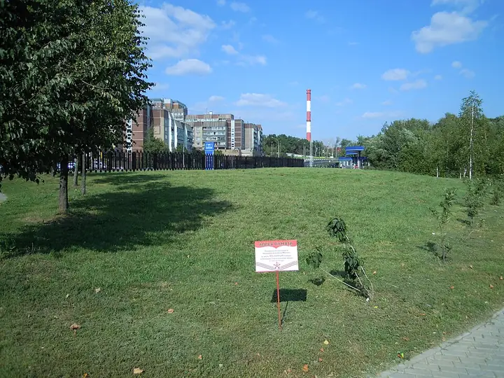

Фото: AVRS, CC BY-SA 3.0 · Wikimedia Commons
Парк · СЗАО
Ландшафтный парк «Митино»
Большой парк с прудом, амфитеатром и катком зимой.
- ₽ · до 1 500 ₽ на человека
- в 1 плане
Позвать сюда: Ландшафтный парк «Митино»Открыть в каталоге: Ландшафтный парк «Митино»Маршрут до места: Ландшафтный парк «Митино»
Адрес и детали
- Адрес
- ул. Барышиха
Открыть на Яндекс Картах (в новой вкладке) - Метро
- м. Волоколамская
- Округ
- Северо-Запад (СЗАО)
- Цена
- до 1 500 ₽ на человека
- Проверено
- работает — проверили в октябре 2026
Планы с этим местом 1
- Ландшафтный парк «Митино» · Парк · м. Волоколамская
- 13 минут пешкомLuna · Караоке-клуб
Круг вокруг пруда в ландшафтном парке «Митино», а потом караоке Luna: диджей, кухня и звукорежиссёр, который выставит микрофон даже новичку.
Открыть план: Парк «Митино» и караоке рядомПозвать сюда: Парк «Митино» и караоке рядом
Фото: AVRS, CC BY-SA 3.0 · Wikimedia Commons

Похожие рядом

Что ещё рядом
Как позвать
- Выбери план, место или событие — в карточке адрес, цены и маршрут в Яндекс Картах.
- Нажми «Позвать сюда» — соберётся приглашение-игра для свидания или голосование для компании.
- Отправь ссылку в любой мессенджер: тебе ответят, а компания отметит, куда и когда может. Бесплатно и без регистрации.